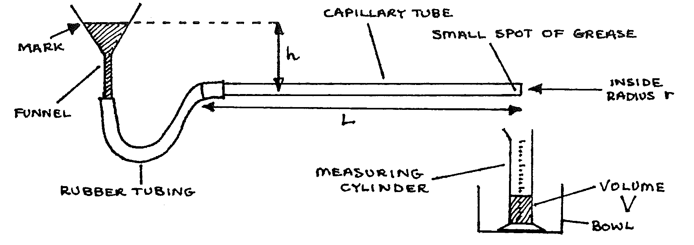

C2-1: The Viscosity of Water Using Flow Through a Capillary Tube¶
Apparatus¶
Funnel with connecting tube to capillary tube (internal diameter approx. \(1\text{mm}\), length approx. \(30\text{cm}\).; stopclock; \(0.5\text{m}\) ruler; \(25\text{ml}\) & \(50\text{ml}\) measuring cylinders; thermometer; \(\frac{1}{2}\)L water in beaker; bowl; spirit level; 1 sheet of graph paper; stand & 2 clamps.

To measure the tube diameter: use an additional \(20\text{cm}\) of the same capillary tubing; beam balance & masses.
Procedure¶
Set up the apparatus as above. Throughout the experiment, keep the funnel topped up to the level of the mark. Check that the capillary tube is horizontal (use the spirit level), and that drops fall from the tip (if necessary, lower the tip a little). Set \(h\) to \(5\text{cm}\). Measure \(L\).
Collect water drops for \(t = 120\)s, measuring the volume \(V\) collected. Repeat with \(h = 7\)cm, \(9\)cm, \(11\)cm, \(13\)cm.
Tabulate values of \(h\) (in m), \(V\) (in m\(^3\)), and \(\frac{V}{t}\) calculated for every value of \(h\).
To find the inside radius of the capillary tube:
Fill the short capillary tube with water, and dry the outside. Find its mass \(m_1\), and the length \(l\) of water in the tube.
Shake the water out of the tube and dry it. Find its new mass \(m_2\).
Then:
\[\begin{split}\text{mass of water} &= \big(\text{volume}\big) \big(\text{density of water}\big) \\ &= (m_1 - m_2)\end{split}\]Thus:
\[(m_1 - m_2) = \pi r^2 l \big(\text{density of water} \big)\]Solve this to find the radius of the capillary tube.
Check your result by using a ruler to find the radius. If the result from (c above) appears to be very inaccurate use the estimate using the ruler.
Plot a graph of \(h\) against \(\frac{V}{t}\) and find the gradient.
We use the Greek \(\eta\) (eta) to represent viscosity. Calculate the viscosity of water \(\eta\) (unit \(\text{Nsm}^-\)\(^2\) ) using:
\[\begin{split}\eta &= \frac{ \pi r^4 \rho g}{8 L} \times \frac{h}{\frac{V}{t}} \\\end{split}\]Where \(\rho = \text{density of water}\)
Theory¶
Poiseuille’s formula for liquid flow through a tube states:
Flow rate is proportional to pressure difference between ends of the tube
\(\alpha\) is the Greek letter “alpha”, commonly used to mean “is proportional to”. Hence, the relationship can be stated as such:
Flow rate \(\alpha\) pressure difference
The constant of proportionality depends on the radius and length of the tube, and the viscosity of the liquid:
In the experiment, the flow rate is \(\frac{V}{t}\), and the pressure difference is \(h \rho g\).
Questions¶
- Use the theory to show that the formula given in Procedure \(6\) is correct.
- What is viscosity? (Use a physics textbook, and explain in words only).
- What changes would occur in the experiment if oil were used instead? Explain why.
- What energy changes occur when a liquid moves along a horizontal tube?
- Check the formula in Procedure \(6\) by using a method of dimensions.